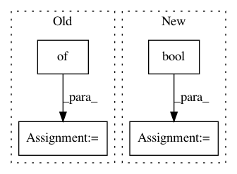

81a34e895e1e657b8c41b631594cfcfda99f250d,basenji/seqnn.py,SeqNN,set_params,#SeqNN#Any#,478
Before Change
if self.batch_renorm:
RMAX_decay = ops.adjust_max(6000, 60000, 1, 3, name="RMAXDECAY")
DMAX_decay = ops.adjust_max(6000, 60000, 0, 5, name="DMAXDECAY")
self.renorm_clipping = {
"rmin": 1. / RMAX_decay,
"rmax": RMAX_decay,
"dmax": DMAX_decay
}
else:
self.renorm_clipping = {}
def train_epoch(self,
After Change
self.cnn_l2 = layer_extend(job.get("cnn_l2", []), 0, self.cnn_layers)
self.final_l1 = job.get("final_l1", 0)
self.batch_norm = bool(job.get("batch_norm", True))
self.batch_renorm = bool(job.get("batch_renorm", False))
self.batch_renorm = bool(job.get("renorm", self.batch_renorm))
//////////////////////////////////////////////////////////////////////////////////////////////////////
In pattern: SUPERPATTERN
Frequency: 3
Non-data size: 4
Instances
Project Name: calico/basenji
Commit Name: 81a34e895e1e657b8c41b631594cfcfda99f250d
Time: 2018-01-02
Author: noreply@google.com
File Name: basenji/seqnn.py
Class Name: SeqNN
Method Name: set_params
Project Name: NifTK/NiftyNet
Commit Name: 8a5eb9a32b96ee67fc8af1813ceb7cbc02f0b4a7
Time: 2018-05-08
Author: wenqi.li@ucl.ac.uk
File Name: niftynet/engine/sampler_random_vector.py
Class Name: RandomVectorSampler
Method Name: __init__
Project Name: ray-project/ray
Commit Name: cb919c5e5c151f87616850c056402beefd5f7ff6
Time: 2020-09-04
Author: rkooo567@gmail.com
File Name: streaming/python/runtime/transfer.py
Class Name: DataReader
Method Name: __init__